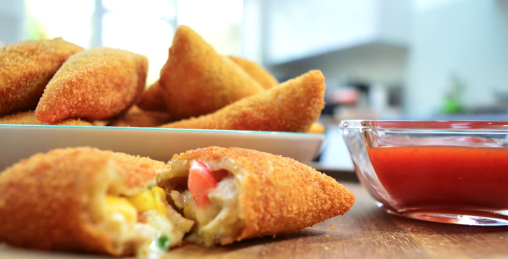
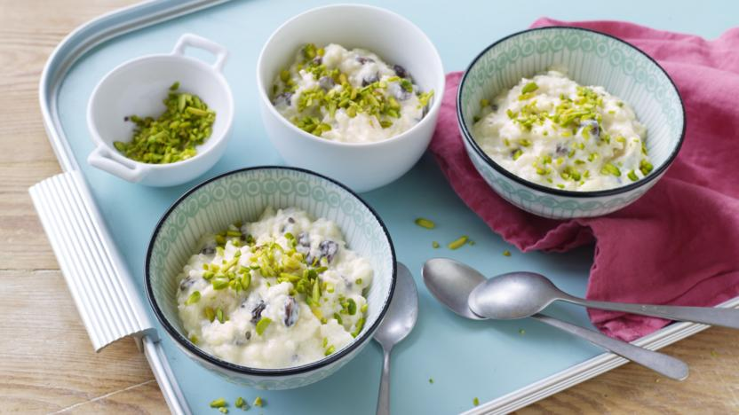
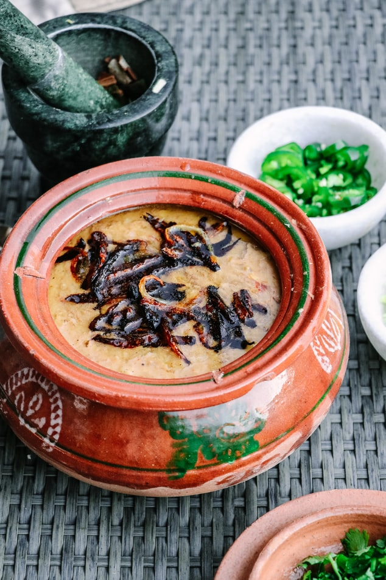

Welcome to Bia's Kitchen

Ramadhan

Eid

Dessert

Handi

Eiting is Necessity, But Cooking is an art!
Chicken Bread
Meat Bolls

I'm Rabia Iftikhar aka Bia
Hi there! I'm Software Engineer and Web Developer form Pakistan. Recently, I got married and shifted to UK, I spent my most of time in Coding and learning new skills. I love to COok, and try new recipes from around the world. I start Cooking when I was 14. This is the work that make me Happy when I make it for others and they enjoy it.